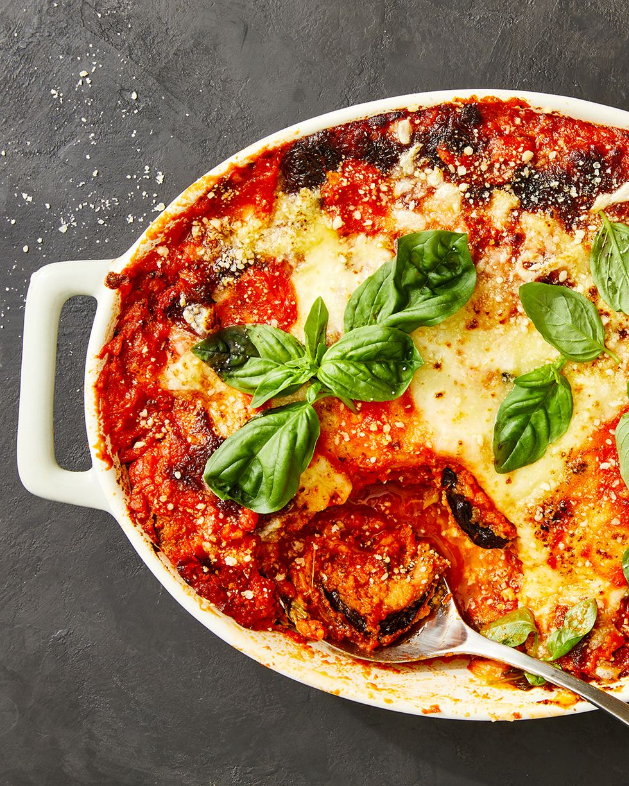

Credits to delish for the recipe
Description
This recipe is for those who want some cheese, tomatoes and eggplants goodness in their lives.
No frying necessary! Purely baked using normal convection oven found in most homes.
Ingredients
- 1 1/2c. panko bread crumbs
- 2 tsp. Italian seasoning
- 1 c. finely grated Parmesan, divided
- Kosher salt
- Freshly ground black pepper
- 2 medium eggplants, sliced into 1/2" - thick rounds
- 3 large eggs
- 4 c. marinara
- 2 c. shredded mozzarella
- 1/c c. thinly sliced basil
Return to top
Home